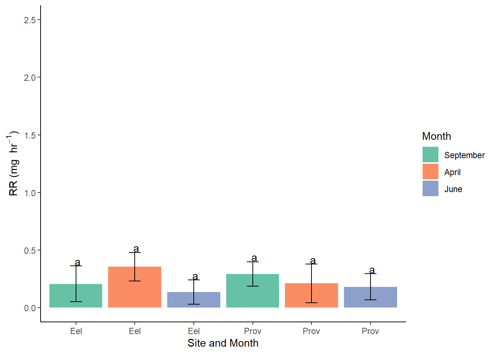

This code estimates biodeposition results and standardizes CR and other values for a clam of 36mm.
gg1 <-ggplot(data = bd, aes(x=Length, y=Dry.weight, color = Month))+geom_point(aes(shape=Treatment))+#xlab("Dry weight") + #ylab("organic content of water (mg/L)")+#ylim(0,1)+#scale_color_discrete(name="Site")+#ggtitle ('OER as a function of DW')+facet_wrap(~ Site)gg1
#Note there is an effect of site and some interactions as well. summary(gm4) #If we are only interested in treatments, there is an effect of site and among the three months. It's not a significantly worse model using AIC and in terms of BIC it is better.
Call:
lm(formula = CR_len.scaled ~ Site * Month, data = bd)
Residuals:
Min 1Q Median 3Q Max
-0.90142 -0.29496 -0.01407 0.24277 1.10244
Coefficients:
Estimate Std. Error t value Pr(>|t|)
(Intercept) 1.107651 0.153927 7.196 1.07e-09 ***
SiteProvincetown 0.202260 0.186415 1.085 0.282192
MonthApril -0.175421 0.196904 -0.891 0.376486
MonthJune 0.009245 0.186415 0.050 0.960610
SiteProvincetown:MonthApril -0.536722 0.278335 -1.928 0.058472 .
SiteProvincetown:MonthJune -1.003456 0.242003 -4.146 0.000106 ***
---
Signif. codes: 0 '***' 0.001 '**' 0.01 '*' 0.05 '.' 0.1 ' ' 1
Residual standard error: 0.4073 on 61 degrees of freedom
Multiple R-squared: 0.4559, Adjusted R-squared: 0.4113
F-statistic: 10.22 on 5 and 61 DF, p-value: 3.8e-07
gm4 <-lm(CR_len.scaled ~ Site*Month, data = bd)gm6 <-lm(CR ~ Treatment, data = bd[bd$Site=="Provincetown",]) #Separate analysis on Provincetown to confirm no difference in feeding rates between treatments.
library(RColorBrewer)library(emmeans)
Warning: package 'emmeans' was built under R version 4.3.2
library(multcomp)
Warning: package 'multcomp' was built under R version 4.3.2
Loading required package: mvtnorm
Warning: package 'mvtnorm' was built under R version 4.3.2
Loading required package: survival
Warning: package 'survival' was built under R version 4.3.2
Loading required package: TH.data
Warning: package 'TH.data' was built under R version 4.3.2
Loading required package: MASS
Attaching package: 'TH.data'
The following object is masked from 'package:MASS':
geyser
library(multcompView)
Warning: package 'multcompView' was built under R version 4.3.2
library(ggsignif)
Warning: package 'ggsignif' was built under R version 4.3.2
# get (adjusted) weight means per groupmodel_means <-emmeans(lm(CR_len.scaled~Month*Site, data = bd), ~ Month * Site, data = bd)# show differencespairs(model_means, adjust ="Tukey", alpha =0.05)
contrast estimate SE df t.ratio p.value
September Eel Pond - April Eel Pond 0.17542 0.197 61 0.891 0.9473
September Eel Pond - June Eel Pond -0.00924 0.186 61 -0.050 1.0000
September Eel Pond - September Provincetown -0.20226 0.186 61 -1.085 0.8855
September Eel Pond - April Provincetown 0.50988 0.227 61 2.250 0.2306
September Eel Pond - June Provincetown 0.79195 0.191 61 4.148 0.0014
April Eel Pond - June Eel Pond -0.18467 0.162 61 -1.142 0.8616
April Eel Pond - September Provincetown -0.37768 0.162 61 -2.336 0.1958
April Eel Pond - April Provincetown 0.33446 0.207 61 1.618 0.5900
April Eel Pond - June Provincetown 0.61653 0.167 61 3.695 0.0060
June Eel Pond - September Provincetown -0.19301 0.149 61 -1.298 0.7850
June Eel Pond - April Provincetown 0.51913 0.197 61 2.639 0.1034
June Eel Pond - June Provincetown 0.80120 0.154 61 5.192 <.0001
September Provincetown - April Provincetown 0.71214 0.197 61 3.620 0.0076
September Provincetown - June Provincetown 0.99421 0.154 61 6.442 <.0001
April Provincetown - June Provincetown 0.28207 0.201 61 1.403 0.7249
P value adjustment: tukey method for comparing a family of 6 estimates
#> P value adjustment: tukey method for comparing a family of 3 estimates# add letters to each meancld_out <-cld(object = model_means,adjust ="Tukey",Letters = letters,alpha =0.05)
Note: adjust = "tukey" was changed to "sidak"
because "tukey" is only appropriate for one set of pairwise comparisons
'emmGrid' object with variables:
Month = September, April, June
Site = Eel Pond, Provincetown
ylab_text <-expression(paste("Length standardized CR (L ",hr^-1, ")"))# Create a ggplotgg_CR <-ggplot(data =as.data.frame(cld_out), aes(x =interaction(Month, Site), y = emmean, fill = Month)) +geom_bar(stat ="identity") +geom_errorbar(aes(ymin = emmean + SE, ymax = emmean - SE), width =0.2, position =position_dodge(0.9)) +labs(x ="Site and Month", y = ylab_text) +ylim(c(0,1.7))+theme_minimal()+theme(legend.position ="none")+geom_text(aes(label = .group, y = emmean + SE), vjust =-.1,) +theme_classic()+scale_x_discrete(labels = my_x_labels)+scale_fill_brewer(palette="Set2")gg_CR
model_means <-emmeans(lm(RR~Month*Site, data = bd), ~ Month * Site, data = bd)summary(lm(RR~Month*Site, data = bd))
Call:
lm(formula = RR ~ Month * Site, data = bd)
Residuals:
Min 1Q Median 3Q Max
-0.35545 -0.20714 -0.13533 0.07144 1.62667
Coefficients:
Estimate Std. Error t value Pr(>|t|)
(Intercept) 0.20714 0.15529 1.334 0.187
MonthApril 0.14831 0.19865 0.747 0.458
MonthJune -0.07181 0.18807 -0.382 0.704
SiteProvincetown 0.08619 0.18807 0.458 0.648
MonthApril:SiteProvincetown -0.22998 0.28080 -0.819 0.416
MonthJune:SiteProvincetown -0.03999 0.24415 -0.164 0.870
Residual standard error: 0.4109 on 61 degrees of freedom
Multiple R-squared: 0.03775, Adjusted R-squared: -0.04113
F-statistic: 0.4786 on 5 and 61 DF, p-value: 0.7909
# show differencespairs(model_means, adjust ="Tukey", alpha =0.05)
contrast estimate SE df t.ratio p.value
September Eel Pond - April Eel Pond -0.14831 0.199 61 -0.747 0.9751
September Eel Pond - June Eel Pond 0.07181 0.188 61 0.382 0.9989
September Eel Pond - September Provincetown -0.08619 0.188 61 -0.458 0.9973
September Eel Pond - April Provincetown -0.00452 0.229 61 -0.020 1.0000
September Eel Pond - June Provincetown 0.02560 0.193 61 0.133 1.0000
April Eel Pond - June Eel Pond 0.22012 0.163 61 1.350 0.7562
April Eel Pond - September Provincetown 0.06212 0.163 61 0.381 0.9989
April Eel Pond - April Provincetown 0.14379 0.209 61 0.690 0.9825
April Eel Pond - June Provincetown 0.17392 0.168 61 1.033 0.9049
June Eel Pond - September Provincetown -0.15800 0.150 61 -1.053 0.8977
June Eel Pond - April Provincetown -0.07633 0.198 61 -0.385 0.9989
June Eel Pond - June Provincetown -0.04621 0.156 61 -0.297 0.9997
September Provincetown - April Provincetown 0.08167 0.198 61 0.411 0.9984
September Provincetown - June Provincetown 0.11179 0.156 61 0.718 0.9790
April Provincetown - June Provincetown 0.03013 0.203 61 0.149 1.0000
P value adjustment: tukey method for comparing a family of 6 estimates
#> P value adjustment: tukey method for comparing a family of 3 estimates# add letters to each meancld_out <-cld(object = model_means,adjust ="Tukey",Letters = letters,alpha =0.05)
Note: adjust = "tukey" was changed to "sidak"
because "tukey" is only appropriate for one set of pairwise comparisons
'emmGrid' object with variables:
Month = September, April, June
Site = Eel Pond, Provincetown
ylab_text <-expression(paste("RR (mg ",hr^-1, ")"))# Create a ggplotgg_RR <-ggplot(data =as.data.frame(cld_out), aes(x =interaction(Month, Site), y = emmean, fill = Month)) +geom_bar(stat ="identity") +geom_errorbar(aes(ymin = emmean + SE, ymax = emmean - SE), width =0.2, position =position_dodge(0.9)) +labs(x ="Site and Month", y = ylab_text)+ylim(c(0,2.5))+#theme_minimal(legend.position = "none")+geom_text(aes(label = .group, y = emmean + SE), vjust =-.1,) +theme_classic()+scale_x_discrete(labels = my_x_labels) +scale_fill_brewer(palette="Set2")gg_RR

RR_scaled_emmeans <- cld_out
# get (adjusted) weight means per groupmodel_means <-emmeans(lm(AR_len.scaled~Month*Site, data = bd), ~ Month * Site, data = bd)summary(lm(AR_len.scaled~Month*Site, data = bd))
Call:
lm(formula = AR_len.scaled ~ Month * Site, data = bd)
Residuals:
Min 1Q Median 3Q Max
-1.17069 -0.34425 -0.07228 0.30448 1.38347
Coefficients:
Estimate Std. Error t value Pr(>|t|)
(Intercept) 1.0861 0.2137 5.082 3.79e-06 ***
MonthApril -0.4542 0.2734 -1.661 0.10175
MonthJune 0.2399 0.2588 0.927 0.35764
SiteProvincetown 0.7567 0.2588 2.924 0.00484 **
MonthApril:SiteProvincetown -0.8232 0.3864 -2.130 0.03718 *
MonthJune:SiteProvincetown -1.6940 0.3360 -5.042 4.40e-06 ***
---
Signif. codes: 0 '***' 0.001 '**' 0.01 '*' 0.05 '.' 0.1 ' ' 1
Residual standard error: 0.5654 on 61 degrees of freedom
Multiple R-squared: 0.5012, Adjusted R-squared: 0.4603
F-statistic: 12.26 on 5 and 61 DF, p-value: 3.059e-08
# show differencespairs(model_means, adjust ="Tukey", alpha =0.05)
contrast estimate SE df t.ratio p.value
September Eel Pond - April Eel Pond 0.4542 0.273 61 1.661 0.5620
September Eel Pond - June Eel Pond -0.2399 0.259 61 -0.927 0.9380
September Eel Pond - September Provincetown -0.7567 0.259 61 -2.924 0.0524
September Eel Pond - April Provincetown 0.5207 0.315 61 1.655 0.5660
September Eel Pond - June Provincetown 0.6973 0.265 61 2.631 0.1053
April Eel Pond - June Eel Pond -0.6941 0.224 61 -3.092 0.0339
April Eel Pond - September Provincetown -1.2109 0.224 61 -5.395 <.0001
April Eel Pond - April Provincetown 0.0665 0.287 61 0.232 0.9999
April Eel Pond - June Provincetown 0.2431 0.232 61 1.050 0.8989
June Eel Pond - September Provincetown -0.5169 0.206 61 -2.503 0.1392
June Eel Pond - April Provincetown 0.7606 0.273 61 2.785 0.0737
June Eel Pond - June Provincetown 0.9372 0.214 61 4.374 0.0007
September Provincetown - April Provincetown 1.2774 0.273 61 4.677 0.0002
September Provincetown - June Provincetown 1.4541 0.214 61 6.787 <.0001
April Provincetown - June Provincetown 0.1766 0.279 61 0.633 0.9881
P value adjustment: tukey method for comparing a family of 6 estimates
#> P value adjustment: tukey method for comparing a family of 3 estimates# add letters to each meancld_out <-cld(object = model_means,adjust ="Tukey",Letters = letters,alpha =0.05)
Note: adjust = "tukey" was changed to "sidak"
because "tukey" is only appropriate for one set of pairwise comparisons
X.1 X Month Site Temp Temp_SE Sal Sal_SE pH pH_SE TCO2
1 1 1 September Eel Pond 22.9 0.0 33.2 NA 7.830 0.006 1877.0
2 2 2 September Provincetown 17.4 0.2 33.4 NA 7.935 0.015 2016.5
3 3 3 April Eel Pond 11.9 0.2 31.0 NA 7.983 0.009 2004.2
4 4 4 April Provincetown 11.8 0.3 31.7 NA 8.070 NA 1970.1
5 5 5 June Eel Pond 18.7 0.1 31.6 NA 7.839 0.030 1904.9
6 6 6 June Provincetown 17.8 0.3 31.1 NA 8.193 0.045 1814.2
TCO2_SE TA_meas TA_meas_SE pCO2 pCO2_SE arag.sat arag_sat_SE Temp_coeff_feed
1 0.6 1980.3 3.7 621.3 9.9 1.84 0.03 0.9636429
2 10.4 2154.3 1.5 508.3 24.4 2.01 0.09 0.8426704
3 7.2 2204.2 NA 443.7 10.8 1.70 0.04 0.4393453
4 14.7 2184.8 NA 343.9 NA 2.02 NA 0.4331072
5 13.5 2065.8 3.0 614.8 47.4 1.56 0.10 0.9317354
6 18.7 2067.9 2.0 244.8 30.4 3.08 0.17 0.8718299
pCO2_coeff_feed Pred_ingestion
1 1 105.33133
2 1 92.10839
3 1 48.02279
4 1 47.34093
5 1 101.84367
6 1 95.29568
head(AR_len_scaled_emmeans)
Month Site emmean SE df lower.CL upper.CL .group
1 June Provincetown 0.3887541 0.1568144 61 -0.03764445 0.8151527 a
2 April Provincetown 0.5653938 0.2308246 61 -0.06224787 1.1930356 ab
3 April Eel Pond 0.6318983 0.1704752 61 0.16835421 1.0954425 a
4 September Eel Pond 1.0860918 0.2137020 61 0.50500846 1.6671751 abc
5 June Eel Pond 1.3259730 0.1459863 61 0.92901750 1.7229285 bc
6 September Provincetown 1.8428307 0.1459863 61 1.44587522 2.2397862 c
df.new <-merge(SW_DEB, AR_len_scaled_emmeans, by =c("Site","Month"))head(df.new)
Site Month X.1 X Temp Temp_SE Sal Sal_SE pH pH_SE TCO2
1 Eel Pond April 3 3 11.9 0.2 31.0 NA 7.983 0.009 2004.2
2 Eel Pond June 5 5 18.7 0.1 31.6 NA 7.839 0.030 1904.9
3 Eel Pond September 1 1 22.9 0.0 33.2 NA 7.830 0.006 1877.0
4 Provincetown April 4 4 11.8 0.3 31.7 NA 8.070 NA 1970.1
5 Provincetown June 6 6 17.8 0.3 31.1 NA 8.193 0.045 1814.2
6 Provincetown September 2 2 17.4 0.2 33.4 NA 7.935 0.015 2016.5
TCO2_SE TA_meas TA_meas_SE pCO2 pCO2_SE arag.sat arag_sat_SE Temp_coeff_feed
1 7.2 2204.2 NA 443.7 10.8 1.70 0.04 0.4393453
2 13.5 2065.8 3.0 614.8 47.4 1.56 0.10 0.9317354
3 0.6 1980.3 3.7 621.3 9.9 1.84 0.03 0.9636429
4 14.7 2184.8 NA 343.9 NA 2.02 NA 0.4331072
5 18.7 2067.9 2.0 244.8 30.4 3.08 0.17 0.8718299
6 10.4 2154.3 1.5 508.3 24.4 2.01 0.09 0.8426704
pCO2_coeff_feed Pred_ingestion emmean SE df lower.CL upper.CL
1 1 48.02279 0.6318983 0.1704752 61 0.16835421 1.0954425
2 1 101.84367 1.3259730 0.1459863 61 0.92901750 1.7229285
3 1 105.33133 1.0860918 0.2137020 61 0.50500846 1.6671751
4 1 47.34093 0.5653938 0.2308246 61 -0.06224787 1.1930356
5 1 95.29568 0.3887541 0.1568144 61 -0.03764445 0.8151527
6 1 92.10839 1.8428307 0.1459863 61 1.44587522 2.2397862
.group
1 a
2 bc
3 abc
4 ab
5 a
6 c
summary(lm(df.new$emmean~df.new$Pred_ingestion))
Call:
lm(formula = df.new$emmean ~ df.new$Pred_ingestion)
Residuals:
1 2 3 4 5 6
0.00101 0.14686 -0.12855 -0.05855 -0.72366 0.76288
Coefficients:
Estimate Std. Error t value Pr(>|t|)
(Intercept) 0.14172 0.76365 0.186 0.862
df.new$Pred_ingestion 0.01019 0.00896 1.137 0.319
Residual standard error: 0.5355 on 4 degrees of freedom
Multiple R-squared: 0.2442, Adjusted R-squared: 0.05523
F-statistic: 1.292 on 1 and 4 DF, p-value: 0.3191
str(df.new)
'data.frame': 6 obs. of 27 variables:
$ Site : chr "Eel Pond" "Eel Pond" "Eel Pond" "Provincetown" ...
$ Month : chr "April" "June" "September" "April" ...
$ X.1 : int 3 5 1 4 6 2
$ X : int 3 5 1 4 6 2
$ Temp : num 11.9 18.7 22.9 11.8 17.8 17.4
$ Temp_SE : num 0.2 0.1 0 0.3 0.3 0.2
$ Sal : num 31 31.6 33.2 31.7 31.1 33.4
$ Sal_SE : logi NA NA NA NA NA NA
$ pH : num 7.98 7.84 7.83 8.07 8.19 ...
$ pH_SE : num 0.009 0.03 0.006 NA 0.045 0.015
$ TCO2 : num 2004 1905 1877 1970 1814 ...
$ TCO2_SE : num 7.2 13.5 0.6 14.7 18.7 10.4
$ TA_meas : num 2204 2066 1980 2185 2068 ...
$ TA_meas_SE : num NA 3 3.7 NA 2 1.5
$ pCO2 : num 444 615 621 344 245 ...
$ pCO2_SE : num 10.8 47.4 9.9 NA 30.4 24.4
$ arag.sat : num 1.7 1.56 1.84 2.02 3.08 2.01
$ arag_sat_SE : num 0.04 0.1 0.03 NA 0.17 0.09
$ Temp_coeff_feed: num 0.439 0.932 0.964 0.433 0.872 ...
$ pCO2_coeff_feed: int 1 1 1 1 1 1
$ Pred_ingestion : num 48 101.8 105.3 47.3 95.3 ...
$ emmean : num 0.632 1.326 1.086 0.565 0.389 ...
$ SE : num 0.17 0.146 0.214 0.231 0.157 ...
$ df : num 61 61 61 61 61 61
$ lower.CL : num 0.1684 0.929 0.505 -0.0622 -0.0376 ...
$ upper.CL : num 1.095 1.723 1.667 1.193 0.815 ...
$ .group : chr " a " " bc" " abc" " ab " ...
# get (adjusted) weight means per groupmodel_means <-emmeans(lm(AE~Month*Site, data = bd), ~ Month * Site, data = bd)# show differencespairs(model_means, adjust ="Tukey", alpha =0.05)
contrast estimate SE df t.ratio p.value
September Eel Pond - April Eel Pond 0.07805 0.0608 61 1.284 0.7925
September Eel Pond - June Eel Pond 0.06181 0.0575 61 1.074 0.8897
September Eel Pond - September Provincetown -0.04019 0.0575 61 -0.698 0.9814
September Eel Pond - April Provincetown 0.05214 0.0699 61 0.746 0.9753
September Eel Pond - June Provincetown 0.26945 0.0589 61 4.572 0.0003
April Eel Pond - June Eel Pond -0.01624 0.0499 61 -0.325 0.9995
April Eel Pond - September Provincetown -0.11824 0.0499 61 -2.369 0.1834
April Eel Pond - April Provincetown -0.02591 0.0638 61 -0.406 0.9985
April Eel Pond - June Provincetown 0.19140 0.0515 61 3.716 0.0056
June Eel Pond - September Provincetown -0.10200 0.0459 61 -2.222 0.2430
June Eel Pond - April Provincetown -0.00967 0.0607 61 -0.159 1.0000
June Eel Pond - June Provincetown 0.20764 0.0476 61 4.359 0.0007
September Provincetown - April Provincetown 0.09233 0.0607 61 1.520 0.6526
September Provincetown - June Provincetown 0.30964 0.0476 61 6.500 <.0001
April Provincetown - June Provincetown 0.21731 0.0620 61 3.502 0.0107
P value adjustment: tukey method for comparing a family of 6 estimates
#> P value adjustment: tukey method for comparing a family of 3 estimates# add letters to each meancld_out <-cld(object = model_means,adjust ="Tukey",Letters = letters,alpha =0.05)
Note: adjust = "tukey" was changed to "sidak"
because "tukey" is only appropriate for one set of pairwise comparisons